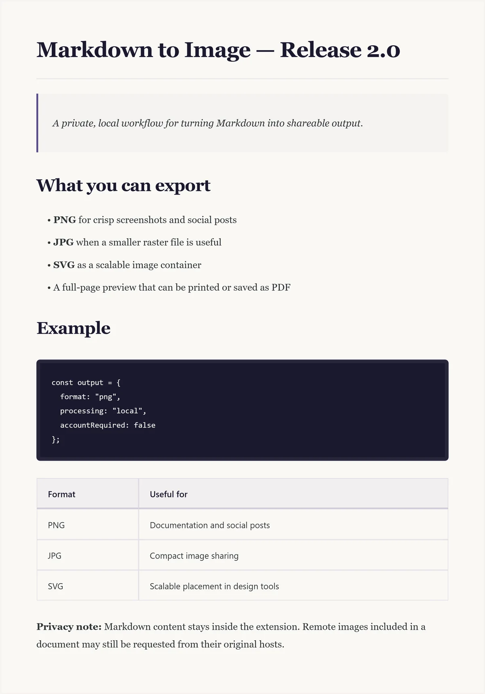

{kind=link}
Does the extension upload my Markdown?
No. Markdown, uploaded text files, rendered HTML, and generated images are processed by the extension on the device.
Markdown to PNG
Markdown to Image renders your document inside the Chrome extension. No account is required, and the extension does not upload Markdown to a developer-operated service.
PNG export uses a 3× render scale · Copy Image also writes PNG
# Project update
> Everything is processed locally.
## Highlights
- Export PNG, JPG, and SVG
- Copy PNG to the clipboard
- Open a full-page preview
`No account required.`Three steps
Type or paste Markdown, drag a file into the extension, or select a local .md or .txt file.
Check headings, code blocks, tables, links, lists, images, and the total document length before exporting.
Select PNG for a lossless raster file. Use Copy Image when the destination accepts a clipboard image.

Real result
The extension captures the rendered paper surface at 3× scale. This keeps headings, code, and body text crisp when the image is shared or placed in documentation.
Very long Markdown produces a tall image. For long-form reading, use the full-page preview and Chrome's print dialog instead.
Download the original PNG · 509 KBChoose the destination first
| Output | Best fit | Important behavior |
|---|---|---|
| PNG | Documentation, screenshots, social posts, clipboard | Lossless raster output at 3× render scale. |
| JPG | Smaller raster sharing when transparency is not needed | Uses JPEG quality 0.92 from the same generated canvas. |
| SVG | Placing the rendered image inside an SVG-aware workflow | Current export embeds the rendered PNG inside an SVG container; text is not converted to editable vector paths. |
| PDF-ready | Long documents and print layouts | Open the full-page preview, then use Chrome Print or Save PDF. |
Practical answers
No. Markdown, uploaded text files, rendered HTML, and generated images are processed by the extension on the device.
Chrome may request images from their original hosts. Some hosts block cross-origin rendering, which can prevent an image from appearing in the export.
No. Version 2.0.0 has no account, subscription, payment, license key, advertising, or extension analytics.
Open the full-page preview instead. It includes a table of contents and can be printed or saved as PDF through Chrome.
No upload · No account
Install the extension, paste a document, and choose PNG when you need a crisp shareable image.